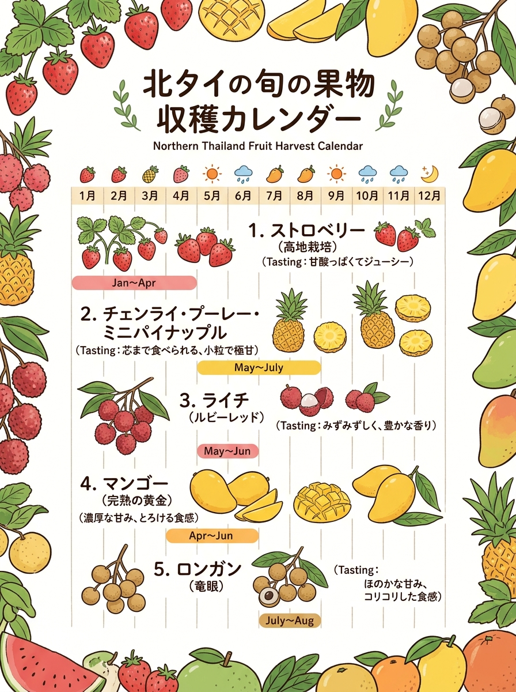
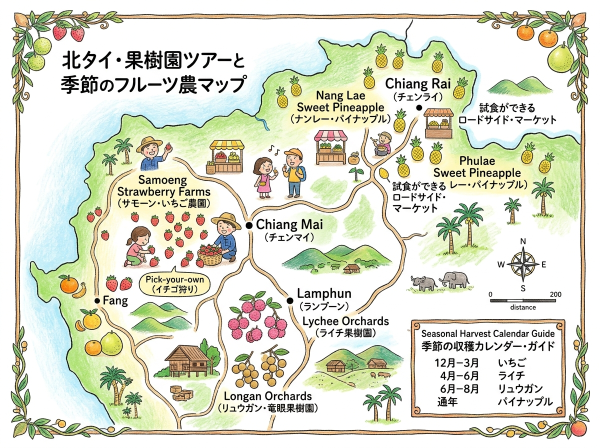

01
VISUAL GUIDE
インフォグラフィック・イラストガイド
クリックすると拡大して詳細を確認・印刷できます。

🔍 タップで拡大
A4 縦型
北タイの農業・旬の果物（ライチ、ロンガン、イチゴ）収穫カレンダー（情報凝縮ポスター）
旅行者の持ち歩き・印刷に適した手書き風インフォグラフィック。

🔍 タップで拡大
A4 横型
周遊マップ ＆ 見開きガイド
位置関係やルート、全体像を俯瞰できるワイドデザイン。
DETAILED GUIDE & DATA
詳細ガイド ＆ データ一覧（全8件）
現地調査および公的データに基づく最新詳細情報。
02
ロンガン / 竜眼（Longan / ลำไย / ドー種・ビエウキアオ種）
03
イチゴ（Strawberry / สตรอว์เบอร์รี / 王室品種80・品種88）
04
温帯みかん（Tangerine / ส้มสายน้ำผึ้ง / ソム・サイナムプン）
05
チェンライ・プーリー・パイナップル（Phulae Pineapple / สับปะรดภูแล）
06
高冷地アボカド（Avocado / อะโวคาโด / ハス種・ブース7種）
07
高冷地富有柿（Persimmon / พลับ / 完全甘柿Fuyu種）
08